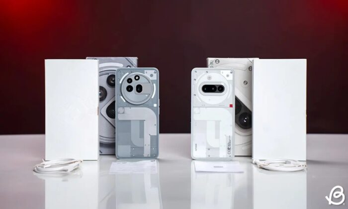

Review Nothing Phone (3a) và (3a) Pro: Sự hoàn hảo đang trưởng thành
Nothing Phone (3a) và Phone (3a) Pro định nghĩa lại điện thoại thông minh tầm trung với trọng tâm là camera và thiết kế độc đáo. Cho dù bạn là người đam mê nhiếp ảnh hay là người đang tìm kiếm một thiết bị thời trang nhưng vẫn tiện dụng, thì dòng Phone 3a đều là lựa chọn hấp dẫn.
Điện thoại này không chỉ gây ấn tượng với màn hình OLED sắc nét và hiệu năng vượt trội mà còn có thiết kế độc đáo. Vẫn giữ nguyên triết lý "Nothing", các sản phẩm này tiếp tục mang đến sự khác biệt so với những chiếc điện thoại tầm trung khác trên thị trường.
Thiết kế của Nothing Phone 3a
Thiết kế của dòng điện thoại này là một sự kết hợp hoàn hảo giữa kiểu dáng hiện đại và các vật liệu cao cấp. Với mặt lưng trong suốt, bạn có thể nhìn thấy các chi tiết kỹ thuật bên trong thiết bị, tạo nên sự khác biệt so với các sản phẩm khác trong phân khúc.

Camera: Chất lượng hình ảnh tuyệt vời
Camera của Nothing Phone 3a cho phép bạn chụp những bức ảnh đẹp ngay cả trong điều kiện ánh sáng yếu. Hệ thống camera kép với cảm biến lớn mang lại chất lượng hình ảnh sắc nét và chi tiết.

Ngày: 07/04/2025